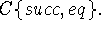

Our characterization of
as the set of functions computable in terms of the
base functions in  cannot be independently verified in general
since there is no other concept with which it can be
compared. However, it is not hard to show that all partial recursive
functions in the sense of Church and Kleene are in In
order to prove this we shall use the definition of partial recursive
functions given by Davis [3]. If we modify definition 1.1 of page 41
of Davis [3] to omit reference to oracles we have the following: A
function is partial recursive if it can be obtained by a finite number
of applications of composition and minimalization beginning with the
functions on the following list:
cannot be independently verified in general
since there is no other concept with which it can be
compared. However, it is not hard to show that all partial recursive
functions in the sense of Church and Kleene are in In
order to prove this we shall use the definition of partial recursive
functions given by Davis [3]. If we modify definition 1.1 of page 41
of Davis [3] to omit reference to oracles we have the following: A
function is partial recursive if it can be obtained by a finite number
of applications of composition and minimalization beginning with the
functions on the following list:
All the above functions are in  Any is
closed under composition so all that remains is to show that
is closed under the minimalization operation. This
operation is defined as follows: The operation of minimalization
associates with each total function the function
whose value for given  is the least y
for which and which is undefined if no such y
exists. We have to show that if f is in so is h. But
h may be defined by
is the least y
for which and which is undefined if no such y
exists. We have to show that if f is in so is h. But
h may be defined by
where
The converse statement that all functions in are partial recursive is presumably also true but not quite so easy to prove.
It is our opinion that the recursive function formalism based on conditional expressions presented in this paper is better than the formalisms which have heretofore been used in recursive function theory both for practical and theoretical purposes. First of all, particular functions in which one may be interested are more easily written down and the resulting expressions are briefer and more understandable. This has been observed in the cases we have looked at, and there seems to be a fundamental reason why this is so. This is that both the original Church-Kleene formalism and the formalism using the minimalization operation use integer calculations to control the flow of the calculations. That this can be done is noteworthy, but controlling the flow in this way is less natural than using conditional expressions which control the flow directly.
A similar objection applies to basing the theory of computation on Turing machines. Turing machines are not conceptually different from the automatic computers in general use, but they are very poor in their control structure. Any programmer who has also had to write down Turing machines to compute functions will observe that one has to invent a few artifices and that constructing Turing machines is like programming. Of course, most of the theory of computability deals with questions which are not concerned with the particular ways computations are represented. It is sufficient that computable functions be represented somehow by symbolic expressions, e.g. numbers, and that functions computable in terms of given functions be somehow represented by expressions computable in terms of the expressions representing the original functions. However, a practical theory of computation must be applicable to particular algorithms. The same objection applies to basing a theory of computation on Markov's [9] normal algorithms as applies to basing it on properties of the integers; namely flow of control is described awkwardly.
The first attempt to give a formalism for describing computations that allows computations with entities from arbitrary spaces was made by A. P. Ershov [4]. However, his formalism uses computations with the symbolic expressions representing program steps, and this seems to be an unnecessary complication.
We now discuss the relation between our formalism and computer programming languages. The formalism has been used as the basis for the Lisp programming system for computing with symbolic expressions and has turned out to be quite practical for this kind of calculation. A particular advantage has been that it is easy to write recursive functions that transform programs, and this makes compilers and other program generators easy to write.
The relation between recursive functions and the description
of flow control by flow charts is described in Reference 7. An ALGOL
program can be described by a recursive function provided we lump all
the variables into a single state vector having all the variables as
components. If the number of components is large and most of the
operations performed involve only a few of them, it is necessary to
have separate names for the components. This means that a programming
language should include both recursive function definitions and
ALGOL-like statements. However, a theory of computation certainly must
have techniques for proving algorithms equivalent, and so far it has
seemed easier to develop proof techniques like recursion induction for
recursive functions than for ALGOL-like programs.